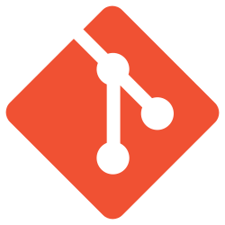

About Me
Welcome! I'm Will Mungas, a recent graduate in
Computer Science at North Carolina State University.
I got into computers when I was younger because
I wanted to make games, and because I loved to
understand how things work 'under the hood'.
Learning to program and developing an understanding
of 3d graphics has been like a huge
behind-the-scenes movie special. Now when I look at
software I can see past the smoke and mirrors and
appreciate the cleverness behind features, effects,
and design choices. I can also learn from these things
to do similar
Currently I'm searching for employment. When I'm not doing that
I can be found programming, working/working out at CrossFit,
playing Go, or hobby smithing in my backyard!
If you'd like to know more (and potentially hire me), check out
the page for my resume as well as my skills and
projects below!
Skills

Through a combination of personal and school projects, I have learned:
- Application programming in Java
- Systems and application programming in C (my beloved)
- Full-stack application development with React and MySQL
- Command-line proficiency and scripting on Linux
- Source control with Git
- 3d graphics and game design
Below is a collection of these projects. Clicking on the titles will take you to an overview page with more details about each one.
Projects
Ongoing

This Website
This site! I am currently working on a design revamp as I learn more about HTML and CSS. Proudly constructed by hand, no AI involved.
wrm utils
A framework I wrote in C for 3d games and applications. Built on top of SDL with OpenGL graphics support and FreeType2 for font loading, I am finalizing the first version and working on a demo project to show it off. You can check out this project at my Github here!
Completed

Coffee Maker
A school project to make a full-stack website for coffee ordering. Built using Java, React JS, and MySQL, using Hibernate and Spring Boot.

Galaxian
Final project of my 3d graphics class: replicate the classic game Galaxian! Built in JavaScript using WebGL, with hand-crafted hardcoded models and effects.